最近尝试用树莓派和两块硬盘搭建了简易的NAS服务，稳定运行了几周，感觉还不错。今天把自己折腾的过程记录一下。
我对NAS的需求
- 2T左右的空间
- 个人多媒体库（我没有屯片习惯，主要是听歌和偶尔下载一些片子来看）
- 管理家庭照片（我和我老婆手机的照片）
- 备份
- 增量备份到老硬盘
- 异地备份到公有云（其实就是百度云）
- 定时备份系统，可快速还原系统
- 外网访问：查看文件，听音乐，看照片
- 用家里电视盒子看视频
- 长时间运行不折腾
- 可以休眠硬盘（其实现在大部分硬盘自带休眠功能）
- 定时开关机
- 消息推送：对于一些关注的事件，给我手机发通知（备份成功，开机，关机等等）
购物清单
- 咸鱼树莓派4B 2G版本，带外壳带风扇（260元）
- 闪迪16G SD卡2张（45元），一张做树莓派系统，一张作为备用
- 东芝新小黑A3 2T移动硬盘+2年包换（跟家里一个1T台式机硬盘配合着用）(418元)
- 腾讯云HK轻量服务器（安装frp作为内网穿透用）（每月24元）
- 腾讯云买的两年域名+免费一年证书（内网穿透用）（46元）
- 小米wifi插座（定时开关机用）（40元）
- 水星（MERCURY）SG105M 5口千兆交换机 （52元）
组建NAS
趁着树莓派到货的间隙，查了许多有关树莓派搭建NAS的资料。其实按照目前的需求，我只需要一个网盘系统然后能够兼顾外网文件访问即可。网盘大家用的比较多的有Nextcloud和Seafile两个方案。一开始试过Seafile，发现一是安装太繁琐；二是它的文件是以块存储的方式，硬盘拆下来后，没办法绕过Seafile直接读取文件。最后决定使用Linux系统+Nextcloud作为个人网盘。
系统安装
树莓派支持的系统挺多的，由于之前用过一段时间Manjaro，对它有点好感，刚好它也有支持树莓派的镜像，索性就用Manjaro作为我的树莓派操作系统。PS: 不要以为可以跟桌面版Manjaro一样使用海量的AUR仓库里的软件，用到后面其实我发现，很多软件都没有对应arm的版本。选Manjaro单纯是因为我习惯了这个发行版。:)
安装过程跟树莓派其他系统大同小异：
- 去Manjaro官网下载树莓派的镜像，因为基本不需要界面，所以我选的是xfce版本：https://manjaro.org/downloads/arm/raspberry-pi-4/arm8-raspberry-pi-4-xfce/
- 下载SD卡烧录工具Etcher：https://www.balena.io/etcher/
- 用Etcher把系统镜像烧录到SD卡
- 将SD卡插入树莓派，通电启动。
由于我没有买树莓派专用显示器，自己的显示器接树莓派又无法显示，所以我打算用SSH登录的方式初始化树莓派系统设置。（主流的树莓派系统都有这功能，防止因为显示输出问题，没办法设置树莓派。）PS：树莓派外接HDMI显示真的是很玄学的事情，我从买第一块树莓派的时候就没成功过。
SSH初始化系统的操作方式很简单：
- 网线插入树莓派网口，让树莓派接入家里的局域网。
- 在家里路由器的管理员页面上找到树莓派分配到的IP。
- 在同一局域网内另一台计算机上运行SSH 连接：
ssh 树莓派IP - 没问题的话，就可以SSH登录，进行系统初始化。
注意：初始化系统时，键盘layout选us，时区选zh-CN-UTF-8。设置完成后，可以在路由器上固定分配树莓派的IP，以防以后内网分配的IP变动。
系统初始化以后，可以顺手更新下pacman的中国源：
1 | sudo pacman-mirrors -i -c China -m rank |
安装Nextcloud
Nextcloud有很多种安装方式，Docker方式应该算是最简单的，刚好我装的Manjaro系统也支持跑Docker服务，我就用Docker来运行Nextcloud了。
Nextcloud官方Docker镜像：https://hub.docker.com/_/nextcloud
步骤：
安装Docker服务。Manjaro 依托与Arch的pacman，安装Docker很方便：
pacman -Syy docker。修改/etc/docker/daemon.json配置，使用国内镜像服务加速
1
2
3
4
5
6
7
8{
"registry-mirrors": [
"https://1nj0zren.mirror.aliyuncs.com",
"https://docker.mirrors.ustc.edu.cn",
"http://f1361db2.m.daocloud.io",
"https://registry.docker-cn.com"
]
}重启docker 服务：
1
2sudo systemctl daemon-reload
sudo systemctl restart docker安装docker-compose（官网最新的安装方式是用docker-compose组织Nextcloud需要的各个组件）。
按照官方Docker镜像的说明配置并启动Docker容器。(https://hub.docker.com/_/nextcloud)
运行Nextcloud需要一个DB（Mysql/MariaDB 或PostgreSQL）,反向代理服务器（Apache或Nginx），Nextcloud本身的app（一个PHP服务），有多种搭配。我最终选择的是MariaDB+Nginx的方案，所以使用的是 nextcloud:fpm 的app镜像，下面是整个docker-compose.yml配置文件信息：
1 | version: '2' |
nignx.conf 的配置可以参考官方的example：
1 | worker_processes auto; |
上面配置都准备好以后，在docker-compose.yml文件的目录下，运行sudo docker-compose up -d 启动所有需要的容器，然后访问树莓派的80端口，就可以访问Nextcloud服务了。第一次访问会有些初始化的配置，跟着提示来就行了。
整个Nextcloud用起来跟百度网盘没什么区别：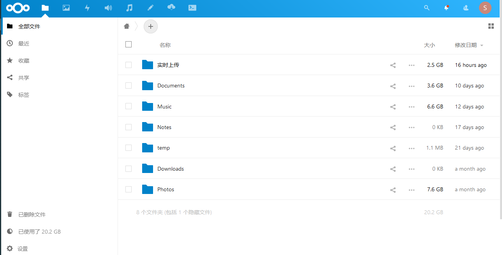
关于Nextcloud的一些Troubleshooting
错误信息：您的数据目录可被其他用户读取，请更改权限为 0770 以避免其他用户查看目录
据说是因为挂载的NTFS硬盘不支持直接直接设置0770文件权限的问题。其实整个树莓派都是自己控制的，文件权限没必要太严格，可以通过下面配置忽略Nextcloud的这个文件权限检查。在Nextcloud的config.php配置文件（对于我的配置，就是.nextcloud/config/config.php）里加一行：
1 | 'check_data_directory_permissions' => false, |
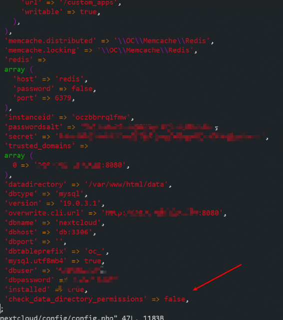
直接拷贝文件到 Nextcloud 用户的files目录里，在Nextcloud识别不到
需要让Nextcloud 重建文件索引，这里使用他的OCC命令扫描文件目录重建索引：
1 | sudo docker-compose -f Nextcloud的docker-compose.yml配置文件所在目录 exec --user www-data app php occ files:scan nextcloud用户名 -v |
速度挺快的：
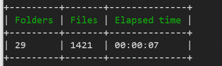
备份Nextcloud 的DB
用docker连接 nextcloud的数据库：
1 | sudo docker run -it --network nextcloud-docker_default --rm mariadb mysql -hnextcloud-docker_db_1 -unextcloud -p |
dump整个db:
1 | sudo docker exec nextcloud-docker_db_1 sh -c 'exec mysqldump --all-databases -uroot -p"root"' > 导出的dump文件.sql |
从dump恢复
1 | sudo docker exec -i nextcloud-docker_db_1 sh -c 'exec mysql -uroot -p"root"' < 要dump文件.sql |
加上反向代理（外网访问有用）
比如我想在家里的路由器安装frpc客户端（内网ip端口：192.168.123.134:11810）做内网穿透用，这个时候就要加入可信任的反向代理服务器列表，在config.php中添加配置：
1 | 'proxy' => '192.168.123.134:11810', |
端到端加密
官方Encryption组件有支持端到端加密，但是问题很多。如果真的有这方面需求，可以考虑第三方方案，我这里用的是Boxcyptor方式，对某些个人比较私密的文件夹进行端到端加密（其实是为了这个另成NAS硬盘2年内挂掉时，返修的安全性：）） 。Boxcyptor官方支持Nextcloud，第一次使用按照引导配置就行。免费的Boxcyptor支持两个设备上使用，对我来说够用了。
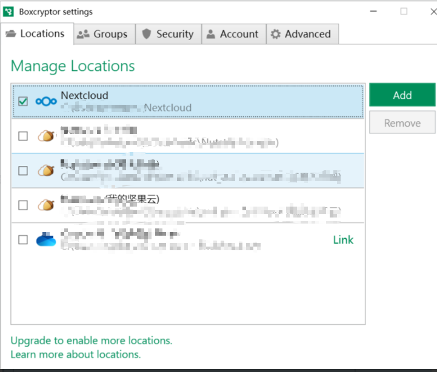
用它加密的Nextcloud文件，只能通过Boxcyptor查看，直接通过硬盘或者网页版Nextcloud查看都是加密的文件。
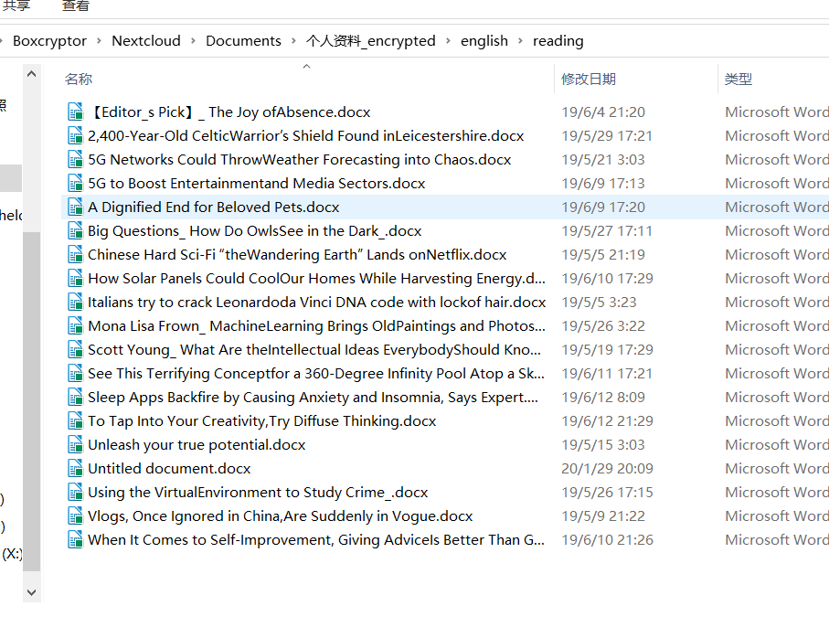
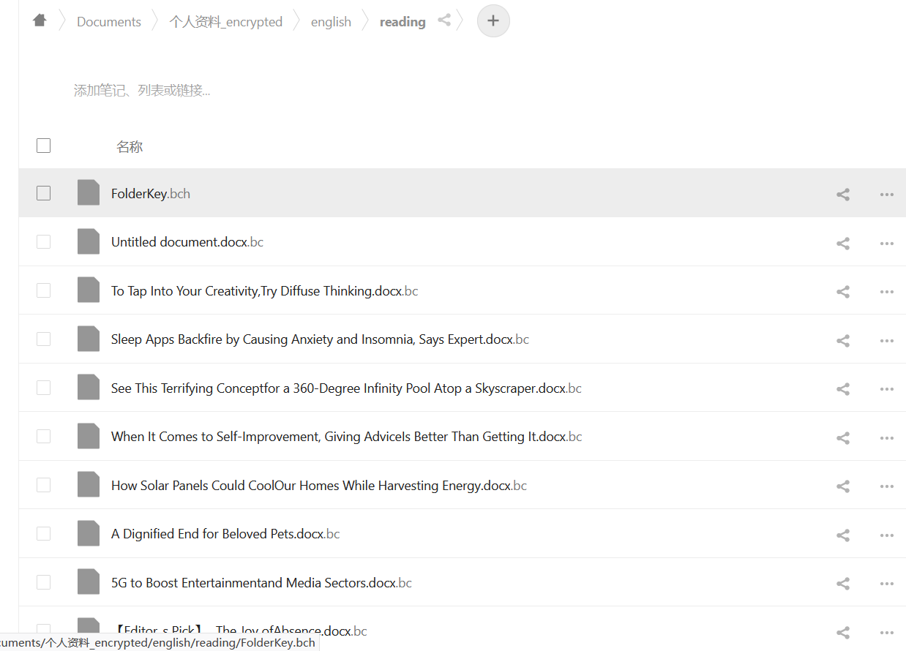
PS: Boxcryptor 的android 客户端只有公网域名的地址能连接，内网地址不行，不知道为啥。
听歌
Nextcloud安装audio player和music插件可以实现在网页版Nextcloud里播放音乐文件。Android安装CloudBeats可以连接到Nextcloud里串流听音乐。
至于想要实现像网易云那样的自建音乐服务，需要一些其他方案（比如subsonic，plex，koel之类的）。目前CloudBeats对我来说够用，后续有空可能会再折腾折腾。
针对这个树莓派NAS的一些其他设置
开机挂载硬盘
这里应该用硬盘的UUID挂载，用盘符/dev/sda1挂载可能不准确，因为盘符有时候会变动。
先用 sudo blkid 查看一下设备UUID
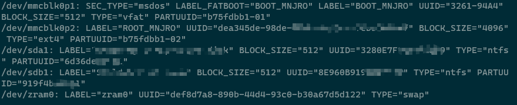
然后编辑 /etc/fstab，添加一行，使其开启自动mount改设备
1 | UUID=设备的UUID /mnt/sda1 ntfs-3g defaults 0 0 |
之后每次启动就会自动挂载这个硬盘到/mnt/sda1目录。
使用千兆交换机，升级内网传输速度
一切都配置完成，并开启samba服务后，发现内网拷贝文件速度还是有点慢，远达不到树莓派USB3.0和5400转机械硬盘的读写速度，后面自己分析了一下，发现瓶颈在家里的交换机，一直用的是百兆的。换了千兆交换机后，内网拷贝速度有了显著提升（虽然还没到真正NAS的标准，但是目前也满足我需求了）。
百兆交换机拷贝速度：
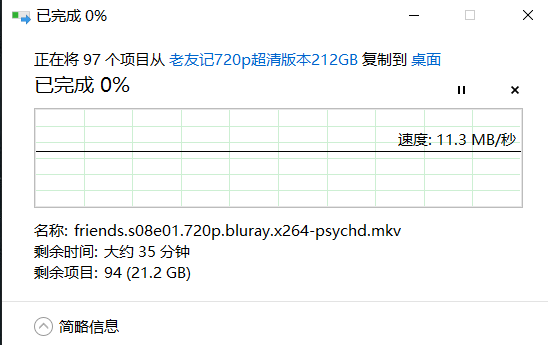
升级千兆交换机后拷贝速度：
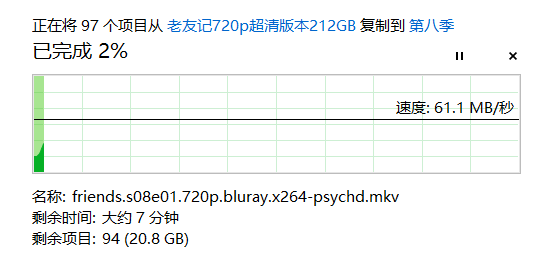
开启SMB服务
虽然Nextcloud已经够用了，但是偶尔我还是会有需要内网直接访问硬盘文件或者通过家里的电视盒子看NAS里的片子的需求，所以就顺手开启了Samba服务。Manjaro如何开启Samba，可以直接参考Arch关于Samba的wiki。
定时开关机
树莓派本身耗电挺小的，不过考虑到延长硬盘寿命，我还是做了定时开关机。实现也很简单，每天晚上12点执行脚本，umount掉所有硬盘，然后poweroff，早上通过小米只能插座每天6点触发通电开关开机。
备份方案
由于目前我并不是重度使用NAS，同时也考虑经济成本，所以并不打算做RAID之类方案。目前就是外挂两块硬盘，一块当NAS文件存放盘，一块作为冷备份每天挂载上来增量同步，同时搭配百度网盘的免费空间，定期往百度网盘同步重要资料。
使用rsync增量本分数据到备份硬盘
我的备份方案是用另一块硬盘每天增量备份数据，所以这里用到了rsync。挂载备份的硬盘后，命令挺简单，就一行：
1 | sudo rsync --delete -a -r -v -P --progress /mnt/sda1/ /mnt/sdb1 |
注意这里一定要有-a(arvhive mode)，这样拷贝过去的文件，会在目标文件保留源文件所有属性（比如最后修改时间mtime，如果没有加-a，下次同步的时候，目标文件的mtime跟源文件不同，同样的文件又会复制一次，这就达不到增量备份的目的了）。
没有加-a 拷贝后：
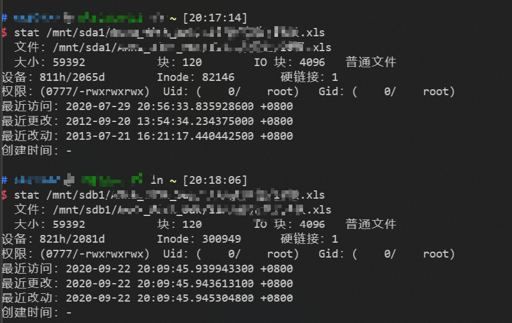
有加-a拷贝后：
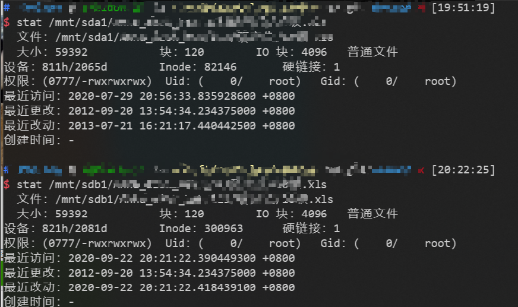
后面再搭配linux的cron服务，就可以实现每天自动增量备份一次全盘数据了。
全量备份树莓派系统
这里用的是dd整张SD卡，然后打包。
每周执行一次以下命令备份系统：
1 | sudo dd bs=4M if=/dev/sd卡 | gzip > 备份文件目录/备份文件名.img.gz |
运行后命令行会卡住，直到备份结束，16g的SD卡差不多花费十几分钟。
如果想看进度，在另一个命令行中输入：
1 | watch -d -n 5 ls -lh 备份文件目录/备份文件名.img.gz |
使用百度网盘做为公有云备份
使用两块硬盘不做Raid还是有一定的数据丢失风险的，所以我同时使用了百度网盘作为另一个备份方案。这里用到了bypy这个百度网盘这个python写的命令行客户端。虽然目前该项目已经停止开发，但还是能正常使用，满足我上传备份文件的需求。通过配置定时计划的方式，我将一些重要资料，照片归档，系统全量备份文件等定时打包上传百度网盘。目前百度网盘免费空间2T，跟我本地硬盘一样大，算是够我使用了。
配置Cron定时计划
首先是安装cronie，它是cron的其中一种实现。
1 | sudo pacman -Syy cronie |
然后用crontab -e，编辑自己想要的cron的定时计划，我把上面用到的备份都写成了shell脚本，定时执行。
cronie的日志在systemd的journal日志里， 要想看cronie的日志的话，可以使用 journalctl。
使用Server酱发送通知到手机
Server酱是一个易用，免费的往微信发送通知的API，使用方式也非常简单，使用申请的key直接调用它的http接口就能往自己微信发送消息，非常适合整合在自己的服务端维护脚本里。我把上面在cron里用到的定时计划脚本都添加了Server酱的通知，方面追踪各个任务每天的执行成功/失败情况。
外网访问
到目前为止，就可以使用Nextcloud和SMB服务在内网访问NAS的文件了，剩下的就是怎么搞定外网访问。
外网访问的方案有很多种，但是总结起来就两类：一类是你的NAS所属的网络本身就暴露在公网上，也就是你们家有公网IP，这个时候就可以上DDNS把你的NAS服务挂在某个域名下;另一类是NAS是身处内网，你需要另一台能公网访问的机器（如各种云主机）与它通信（各种内网穿透方案，frp，花生棒什么的），然后你通过访问这台公网机器达到间接访问公网NAS文件的目的。
以前我们家是电信宽带，后来为了省钱换成了移动，无奈只能用第二种方案（省下的钱还是要掏出来了）。对比了各种内网穿透方案，最终决定采用买云主机自建frp服务的方式。然后直接http云主机感觉不够安全，于是又买了个便宜的域名和免费的SSL证书给终端frp访问套上一层HTTPS（真是折腾不止。。。）。
买云主机
其实我做公网访问主要原因就是想弃用网易云，随时听自己硬盘里的歌，所以这里还要考虑流量的问题。中国大陆的云主机服务流量都太贵了，最便宜的机器基本标配1M小水管，极限上传速度只有128K，现在一10M以内的歌，估计够呛。要是买国外的机器，访问是个问题，按照以前用搬瓦工和DO的经验，有时候网络访问还不如国内这些1M小水管。后来各大论坛查了一圈，发现腾讯云的HK轻量应用服务器还不错，1U1G，30Mbps带宽一个月1T流量只要24元/月，买来试用了一下，发现我这边访问速度还不错（起码听歌，下文件是没问题的），就打算用它来搭建内网穿透服务了。
用frp搭建内网穿透服务
搭建frp网上教程一大把，这里说说我的思路：
- 首先是在云主机上安装frps，即frp的server端。
- 然后在家里的路由器安装frpc，即frp的client端。
- 然后在路由器上配置端口转发，把frpc过来的请求转发到内网的Nextcloud去。
这样就实现了公网访问家里树莓派Nextcloud服务。我没有采用直接在树莓派上装frpc的方式，主要是考虑到安全问题，因为一旦树莓派暴露了，其实家里的其他内网设备都能访问了，但是路由器不一样，路由器有自己的防火墙和其他安全策略，在暴露有限端口的情况下，我觉得还是更安全的。而且我们家路由器是刷了padavan系统的，自带frpc，只要导入配置就好了，也比较省事。
内网穿透相当于给Nextcloud加了一个反向代理，所以Nextcloud也要加一个配置，把云主机的IP和frps端口配到config.php的trusted_domains中：
1 | 'trusted_domains' => |
申请域名和证书
由于云主机是买的腾讯云的，为了省事，索性域名和免费证书也用他家的了。域名随便挑了个便宜顺眼的xyz域名，46块钱2年。然后顺便申请了他家一年的免费证书，通过教程简单操作几下，不到一个小时就完成了域名注册，配置，开启HTTPS，整个过程还是蛮顺利的。不过据说腾讯云一年的免费证书以后续期很不方便，还是用Let’s Encrypt然后写脚本三个月自动续签比较好。目前我还是这个白嫖证书先用着，等明年到期了再试试Let’s Encrypt的方案。
开启HTTPS后，Nextcloud的confg.php还要再加点小配置：
1 | # 以下两行表示：只有在源ip是192.168.222.1时，才强制使用https协议 |
上面的配置主要是为了重写Nextcloud的baseurl，大部分情况下Nextcloud都能通过客户端访问的情况，在需要的时候拼接出Nextcloud站点的地址（比如生成WebDAV url的时候）。但有时候会失误，比如目前我的HTTPS方案，它会识别不了我是HTTPS访问的，拼接出来的WebDAV url还是http开头的，上面的配置就是告诉Nextcloud，用户访问来源是192.168.123.222（我装有frpc的路由器ip），他是https协议的，为他生成的url必须用https的。
大功告成
说实话，花了一个国庆假期搞的这套树莓派NAS，其实不算是NAS，只是一个自建的网盘和文件服务器。但是它基本满足了我们家目前对NAS的需求。自从搭完以来，两块硬盘一个树莓派放在角落里基本没在管它，每天检查一下Server酱的定时计划执行结果，自动备份照片，偶尔听听歌，放个片子，不用在纠结各家音乐服务的会员，感觉还是很不错的。